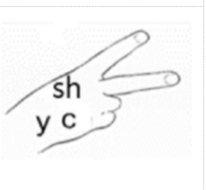
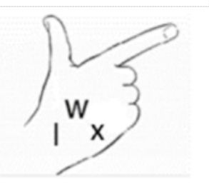
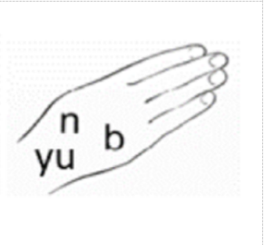

介音Medials
介音是复合韵母中起过渡作用的 i / u / ü，出现在声母和韵腹之间（如 xiao 里的 i）。介音不需要新的手型——它们直接借用3个已有的声母手型来表示。Medials are the transitional i / u / ü sounds inside compound finals, between the initial and the main vowel (like the i in xiao). They need no new handshapes — they reuse 3 of the consonant handshapes.
y (i)
用手型 8Uses handshape 8

w (u)
用手型 6Uses handshape 6

yu (ü)
用手型 4Uses handshape 4

执行顺序：有介音的音节，先做"声母手型"，在移向韵母位置的途中变成"介音手型"，到达位置时手已是介音手型。Order: in a syllable with a medial, start with the initial's handshape, then change into the medial's handshape while moving to the vowel's position. The hand arrives already showing the medial's handshape.